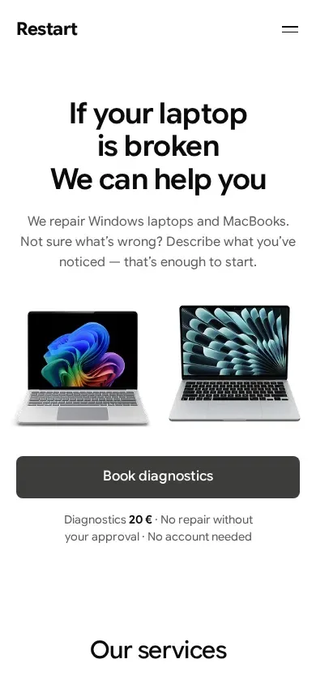
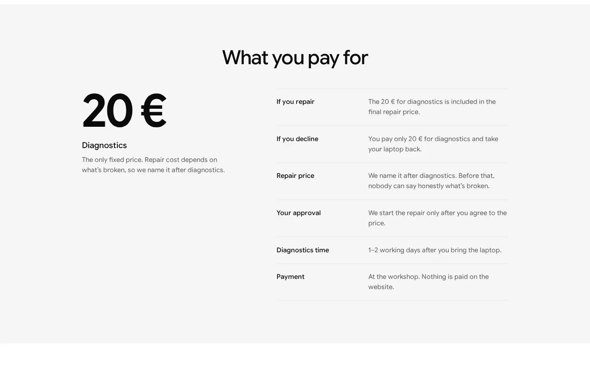
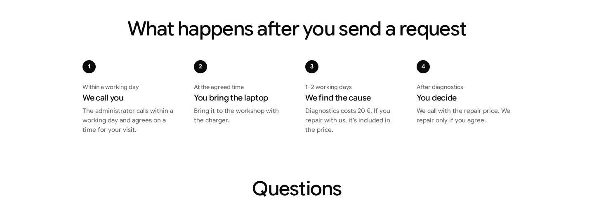

07Restart· Laptop repair service · study project
“My laptop is broken. What now?”
A laptop repair service designed for a UX course. The real task was removing the fear of an open-ended bill.
- Role
- User flow, interface copy and UI design in Figma.
- When
- October 2026
- Built with
- Figma, Shopify theme
- Status
- Study project. The service is invented
- Development
- Built as a working site with AI-assisted coding using Claude.


- Problem
- Nobody can price a repair before seeing the laptop.
- What I did
- Promise the one honest number: diagnostics cost 20 €.
- Where it stands
- Study project. The service is invented.
01The question
You do not know what is broken, so nobody can tell you the price.
A person with a dead laptop cannot describe the fault and expects to be overcharged. Most repair sites answer with a price list of thirty services, which only helps if you already know which one you need.
02What I decided
- 1
One number on the page
Diagnostics cost 20 €. If you go ahead with the repair, it is included. If you decline, that is all you pay.
- 2
“Describe what you noticed” is enough to start
The second sentence on the page says it: you do not have to know what is wrong. Say what you see, in your own words.
- 3
No repair without your yes
The line sits under the main button and again in the price table, because it is the sentence people look for.
- 4
What happens next, as four steps
We call you, you bring the laptop, we find the cause, you decide. Each step has a time attached.
- 5
No account, no online payment
You pay at the workshop. Asking for a card before anyone has seen the laptop would bring the fear straight back.
- 6
Quiet on purpose
One typeface, almost no colour, a lot of white. Someone whose computer just died does not need a lively website.
03The screens


04What I learned
The smallest project taught me the most about copy.
There is almost nothing to draw here. The whole design is the order of six sentences and which of them gets to be large. It is the project I would show to explain how I think about words in an interface.
It was not tested with people outside the course.